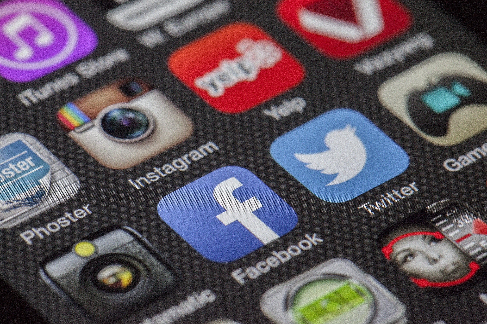

Oppgave 1 - Gruppearbeid
- Hva er internett, egentlig?
- Var det noe som overrasket dere i filmene?
- Var det noe som var vanskelig å forstå?
- Nevn noen avgjørende måter internett har forandret dagliglivet vårt på?
Kort fortalt er internett en sammenkobling av datamaskiner i et nettverk som gjør det mulig at de ulike datamaskinene kommuniserer med hverandre. er datamaskiner koblet til en ledning i bakken. Denne ledningen er koblet til en ruter. Vi kobles til denne ruteren, enten trådløst eller ved kabel. Det finnes flere billioner komponenter som er koblet til slike rutere rundt om i verden. For eksempel har jeg alene både en smarttelefon, en datamaskin og et nettbrett.
At kablene var så små og var laget av glass
Hvordan glassfiber kan sende så mye informasjon over en så lang strekning.
Internett har forandret livet vårt på utrolig mange forskjellige måter. Noen eksempler på dette er hvordan det hjelper oss med å kommunisere med andre mennesker over lange strekninger og det hjelper oss med å ta opp ny informasjon.
Oppgave 2 - Individuelt
Oppgaver i 5.1 - Prøve selv
- Hvor mange timer bruker du daglig på internett?
- Hvilke apper og sosiale medier bruker du daglig?
- Forsøk å finne ut hvor mange i Norge i dag som bruker Facebook og Snapchat daglig
- Forsøk å finne ut hvor mange i Norge som ikke bruker internett
- Hvordan kan økningen i ensomhet som Ungdata-undersøkelsen viser, skyldes den digitale måten vi kommuniserer på?
- Hvilke fire punkter kjennetegner kommunikasjon på sosiale medier?
Mer enn 8 timer, hvis du tenker på at jeg bruker internette for skolearbeid
Youtube, Discord og Tumblr.
Ifølge Ipsos.com så er det ca 3.5 millioner nordmenn over 18 år som har en profil på Facebook og omtrent 83% av dem bruker nettsiden daglig. Med SnapChat så er det nesten 2.4-2.6 millioner nordmenn som bruker appen daglig
(Denne kilden ble hentet fra tormodsperstad.com som ble oppdatert 11. juli 2018 og fikk informasjonen fra ipsos.com som ble oppdatert 17. januar 2018.)
Fra statistisk sentralbyrå (publisert 12. september 2017) så surfer ni av ti på nettet hver dag. 90% av nordmenn mellom 16 og 79 år bruker internett daglig. Det betyr at ca.10% av nordmennene i Norge ikke bruker internett
Vi bruker mer tid foran en skjerm og mindre tid sammen med venner ansikt-til-ansikt. selv om vi kanskje kommuniserer med venner via nettet så er å være fysisk tilstede med en vennn noe helt annet.
| VARIG LAGRING: | Til forskjell fra samtaler mellom personer som møtes fysisk, blir kommunikasjonen i sosiale medier lagret på nettet for all framtid |
| SØKING: | Digitale identiteter er søkbare |
| GJENBRUK: | På nettet kan vi manipulere et budskap på en slik måte at det kan være vanskelig å skille originalen fra kopien. |
| USYNLIGE TILSKUERE: | I det virkelige livet kan vi ha ganske god oversikt over hvem som er og hører oss. PÅ nettet har vi i liten grad kontroll med hvem det er som følger med på hva vi gjør. |
Oppgaver i 5.2 - Prøve selv
- Hva er forskjellen på vertikale og horisontale sosiale systemener?
- Hvordan kan teknologi brukes til å styrke kommunikasjon og sosial tilhørlighet?
- Hvordan kan språklige og kulturelle minoriteter bruke sosiale nettverk?
- Kartlegg din egen hverdag. hvor mange timer bruker du på skole, trening, henge med venner, familie, alene på rommet og timer til å sove? Hvor brukte du sosial medier mest?
- Gå 24 timer uten at du er på sosiale medier. Hva opplevde du?
- Hvordan kan sosiale medier misbrukes av religiøse og politiske ekstremister?
Vertikale sosiale systemer er når vi er fysisk sammen i større eller mindre grupper. For eksempel når vi er på skolen, på håndballaget, hos familie eller med russe-gjengen, mens horisontale sosiale systemer er for eksempel online-spill eller på sosiale medier som Facebook, Youtube, Twitter og Instagram.
Mange finner sosial støtte på internett og sier at det er lettere for dem å diskutere personlige problemer gjennom tekst på nettet enn i ansikt-til-ansikt-relasjoner. Det er også mulig og lettere å finne andre folk som har samme interesser som deg.
Kan ta kontakt med folk som er fra samme sted som dem.
På en mandag så er jeg på skolen i ca 7-8 timer (+ 2 timer hvor jeg gjør lesker på skolen). Jeg henger ikke med venner på hverdagen fordi jeg ikke har tid og jeg henger bare med familien min når vi spiser middag. Jeg bruker mest tid på sosiale medier alene på rommet mitt og sover i ca. 9-8 timer.
Jeg har vært 24 timer uten sosiale medier før, men da var jeg med venner og familie som gjorde at jeg hadde noe å gjøre.
De kan manipulere og spre ut sin budkskap til flere tusen mennesker.